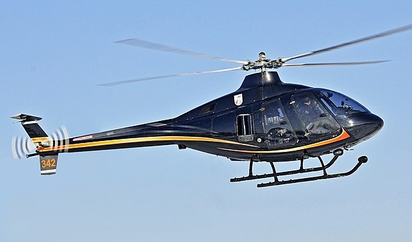
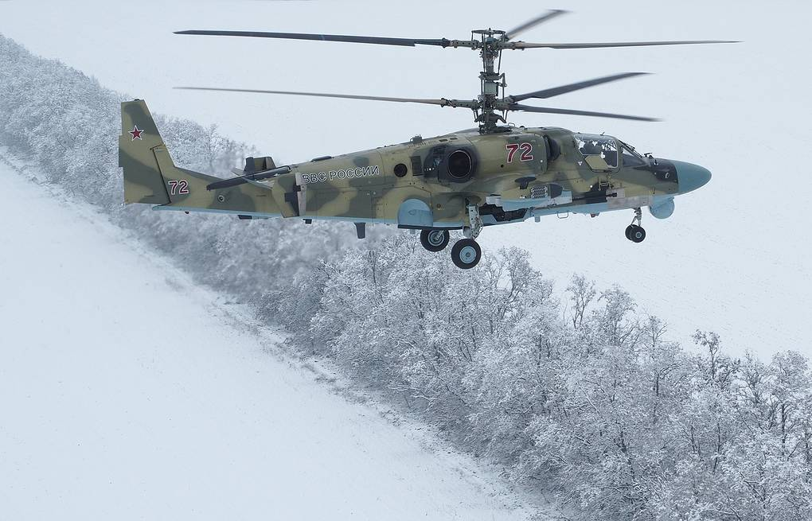
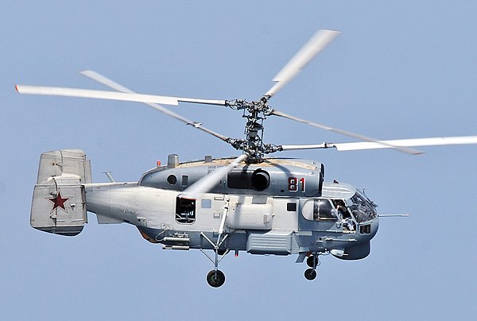

Civillian roles
Civillian helictopers play a crucial part in sectors like transportation, emergency services, and agriculture.
Discover MoreMilitary roles
Russian military helicopters play essential roles in modern warfare, encompassing reconnaissance, logisitcs, troop transport, and close air support.
Discover MoreSpecial use roles
Specialised helicopters are used for electronic warfare, reconnaissance, and carrier operations at sea.
Discover More